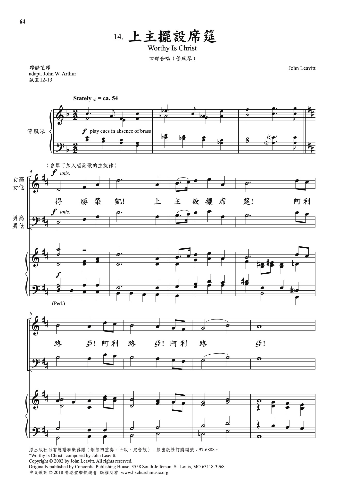

0842 I am the Bread of life I AM THE BREAD _Suzanne Toolan
來就主席筵 (聖餐合唱聖頌)
| 簡介
I Am the Bread of Life |
| As the quotation marks suggest, the
first four stanzas and refrain are quoted from Jesus (John 6:35, 44, 51,
53; 11:25), while the fifth stanza draws on the words of Martha (John
11:27), voicing our response also. Being mindful of these differences
allows more prayerful singing. The shifting
word placement on the first three stanzas is challenging for a
congregation, and since these words are quotations of Jesus, a single
voice would be best. Let the accompaniment here be restrained.
Sing in harmony and add strings or brass if you have them. Choose a
steady tempo that can carry both the comfort and commitment of the
stanzas as well as the rising majesty of the refrain. |
|
|
|
I am the Bread of Life
I am the bread of life.
He who comes to me shall not hunger;
he who believes in me shall not thirst.
No one can come to me
unless the Father draw him.
And I will raise him up,
and I will raise him up,
and I will raise him up on the last day.
The bread that I will give
is my flesh for the life of the world,
and he who eats of this bread,
he shall live for ever,
he shall live for ever.
And I will raise him up,
and I will raise him up,
and I will raise him up on the last day.
Unless you eat
of the flesh of the Son of Man
and drink of his blood,
and drink of his blood,
you shall not have life within you.
And I will raise him up,
and I will raise him up,
and I will raise him up on the last day.
I am the resurrection,
I am the life.
He who believes in me
even if he die,
he shall live for ever.
And I will raise him up,
and I will raise him up,
and I will raise him up on the last day.
Yes, Lord, I believe
that you are the Christ,
the Son of God,
who has come
into the world.
And I will raise him up,
and I will raise him up,
and I will raise him up on the last day.
Suzanne Toolan |
|

 |
| |
|
| |
|
http://www.sistersofmercy.org/blog/2016/09/02/the-story-of-i-am-the-bread-of-life/
The Story of “I Am the Bread of Life”
September 2, 2016
By Sister Suzanne Toolan
This is the fourth reflection in our Music and Mercy series. Read the whole
series here.
Sister Suzanne Toolan. Credit: Michael Collopy
I wrote “I Am the Bread of Life” for a San Francisco archdiocesan event in
1964. I was teaching high school at the time and wrote the song during my free
period. When the bell rang for the next class I decided I didn’t like the
music, so I tore it up and threw it in the wastepaper basket.
My classroom was next to the infirmary, where the girls who didn’t want to take
tests or were otherwise unprepared for class went for a period or two until they
were tracked down by an exasperated teacher. As I left my classroom, a freshman
girl came out of the infirmary and said, “What was that? It was beautiful!” I
went back into my classroom, took the manuscript out of the basket and taped it
together. It has had a life of its own ever since.
“I Am the Bread of Life” began to appear in archdiocesan liturgies. There were
many purple ditto copies going around. Not everyone liked the hymn. One
liturgist gave talks on why it shouldn’t work, saying: “It is not metric; its tessitura [vocal
range] is too high. Its tessitura is
too low.” Others objected to it because they felt by placing the words of Jesus
into the mouths of the assembly, those words were being attributed to the
assembly.
Travelers to Europe and Asia in the 70s and 80s would tell me about hearing “I
Am the Bread of Life” in different countries. I have a copy of it in a Slavic
language, in Korean and Spanish, but it has been sung in so many other
languages. It is included in hymnals of other Christian faith traditions. I
remember being introduced to a woman who was Episcopalian. When she heard my
name she said, “Oh, number 335!”—the number of the hymn in the Episcopal Hymnal.
I could never figure out how the hymn became popular. I know in our Roman
Catholic tradition it came at the beginning of our use of the vernacular, and we
simply didn’t have much to sing in our own language. But I also think its
popularity stems from its message of resurrection, which is so strong in these
words of Jesus. We so need that message of hope. I am always touched when people
tell me that at the funeral of a mother, father or friend, these sung words of
Jesus gave them consolation. Then I know the hymn has done its work.
Thank you, young freshman way back in 1964! I’m sorry if you were not feeling
well that day and had to go to the infirmary—or, I’m glad that you decided to
sit that class out. I hope your teacher didn’t scold you too much.
https://en.wikipedia.org/wiki/I_Am_the_Bread_of_Life
From Wikipedia, the free encyclopedia
Jump to navigationJump
to search
https://en.wikipedia.org/wiki/I_Am_the_Bread_of_Life
https://christiantimes.org.hk/Common/Reader/News/ShowNews.jsp?Nid=157128&Pid=2&Version=1643&Cid=583&Charset=big5_hkscs
感謝主新樂譜發佈會已於3月3日於公理堂順利舉行，當天有來自不同教會的聖樂事奉人員出席。《來就主席筵》所收集的詩歌是特為聖餐禮儀使用的，本會會長、歌詞翻譯兼出版主編譚靜芝博士當天解釋了這些詩歌在禮儀、神學、節期與音樂上的應用，並由本會導師特約詩班示範其中四首詩歌，與會者也被邀請參與會眾回應的部分，一同經驗透過詩歌唱出我們共同的信仰。
https://www.zanmeishi.com/tab/18957.html
第198首 -我就是生命的粮

标 题： 属灵的粮食
经节： 耶稣说：「我就是生命的粮。到我这里来的，必定不饿；信我的，永远不渴。」（约翰福音六章35节）
我们知道如何以粮食满足自己的肉体。肚子饿了，我们就去吃。你是否也是如此对待你的灵性？
耶稣说，如果相信祂，我们永远不会有灵性的饥饿与营养不良，因为祂说自己是「生命之粮」。每当有灵性的需要，我们就单纯地来到耶稣面前，让祂满足我们。我们的问题是有时以自己的经验解释圣经。我们说：「是的，我们曾经灵性饥渴过。」如果真是如此，不是神没告诉我们真理，就是我们误解自己的经验。我们是否可能以人为的办法，来满足灵性的饥渴？
我们是否太倚靠朋友与他人的经验，却从未学习来到耶稣面前，让祂供应属灵食物？我们是否多年前曾享用属灵丰盛的筵席，以为饱尝了基督就不需再吃？我们愈来愈瘦、愈来愈饿，因为我们还靠着多年前朝见神时的供应。灵性若有缺乏，不是因为神没有为你预备丰盛的资源，乃是因为你没有以信心回应神的邀请（约翰福音十：10）。当神在旷野赐下吗哪时，以色列儿女需要每天出去拾取神每日的供应。
耶稣教导祂的门徒如此祷告：「我们日用的饮食，今日赐给我们。」属灵的营养需要你日日追求，你今天是否已经查找属灵的粮食呢？
http://www.chineseministries.com/books/inchri8.htm
第八章 在基督�婸漼�生命的糧
人有肉身的生命，也有屬靈的生命。肉身的生命，需要物質的糧；屬靈的生命需要神所賜生命的糧。甚麼是神生命的糧？約6:26-58清楚解釋生命的糧。
一、永生的食物
主耶穌講道與現實生活息息相關。他在加利利行了神蹟，將五餅二魚給五千人吃飽，這是量增多的神蹟。在迦拿婚宴上，耶穌使水變酒，這是本質改變的神蹟。耶穌大有權能，他醫治各樣的疾病，使瞎子看見、癱子行走、長大痲瘋的得潔淨，眾人想強逼他做王，希望藉著他重建以色列國，脫離羅馬帝國的統治。他卻退隱到山上去，因為主來為要尋找拯救失喪的的人，完成天父救贖的計劃。
當許多人為餅吃飽跟隨耶穌，他就地取材教訓他們說：「我實實在在的告訴你們，你們找我，並不是因見了神蹟，乃是因喫餅得飽。不要為那必壞的食物勞力，要為那存到永生的食物勞力，就是人子要賜給你們的；因為人子是父 神所印證的。」（約6:26
-27）
中國人非常注重食物，並且講究烹飪的方法，總希望色、香、味齊全；尤其注重進補，各種參茸藥材，山珍海味，只要有益於補身，必格外為這些食物勞力。物質的食物隨身體朽壞，隨時間消逝。精神的糧食，如文學、詩詞歌賦、藝術、音樂、等都是精神一時的昇華與舒暢，它還不是屬靈生命的糧食，也不能永存。耶穌提到永生的食物究竟是什麼？為什麼能永存？當耶穌與撒瑪利亞婦人談道之後，耶穌告訴門徒說：「我有食物喫，是你們不知道的。我的食物就是遵行差我來者的旨意，作成他的工。」（約4:32，34）在此的食物不是指物質的午餐，乃是神的道，叫人靈魂得救的福音，就是叫人信主得屬靈的生命，使人心靈不再饑渴。如撒瑪利亞婦人，因信在基督�婸漼�生命的活水就永遠不再渴。傳福音是神的旨意，靈魂得救就是領受生命的糧，可以存到永遠。
當主耶穌被試探時，他對魔鬼說：「經上記著說：『人活著﹐不是單靠食物，乃是靠 神口裡所出的一切話。』」（太4:4）人活著不是單靠物質的食物，乃是要靠神口�堜狴X一切的話。神的話就是永生生命的糧。多少時候人飢渴並非無餅與水，乃是因為不肯聽從神的話。不肯吃喝神的話，是因為不信。
二、神賜生命的糧
當我們第一個孩子來臨時，父母為兒子預備身體的糧，我們特別預備S26奶粉，希望孩子吃了夠營養，能健康長大。當我們重生之後，是否注重我們屬靈的生命的糧？是否天天吃神賜的糧？聖經是神所默示的，是信徒屬靈生命的糧。
耶穌說：「我實實在在的告訴你們，那從天上來的糧，不是摩西賜給你們的；乃是我父將天上來的真糧賜給你們。因為 神的糧，就是那從天上降下來賜生命給世界的。」（約6:32-33）
猶太人十分注重摩西的律法，但律法本身不能叫人得生命。摩西帶領以色列百姓出埃及，在曠野飄流，他們雖然吃過嗎哪，還是死了（約6:49）；因為嗎哪是身體的食物，不是屬靈的食物，不能給人永生。唯有神從天上賜下的真糧，就是神差來的獨生子耶穌，就是神的道（約1:1-2），叫人領受了得生命。因為神是生命的創造者（約1:3-4），神賜人肉身的生命，神也藉著基督賜人屬靈的生命。
三、耶穌是生命的糧
主耶穌是生命的糧，是與眾不同的。世界上沒有任何宗教家、哲學家敢說這種話。基督是從屬天進入屬地的範圍，從永恆界進入暫時界（歷史）；從創造界進入受造界的範圍；從靈界進物質界（道成肉身）。他是神子成為人子，他是生命的本體，才能給人生命。
當初聽了耶穌的話，有明白的，有不明白的；有相信的，有反對的；有模稜兩可的，有羨慕的；耶穌詳細詮釋生命的糧的真義。「他們說﹐主阿﹐常將這糧賜給我們。耶穌說：『我就是生命的糧；到我這裡來的，必定不餓，信我的，永遠不渴。……我就是生命的糧。你們的祖宗在曠野喫過嗎哪，還是死了。這是從天上降下來的糧，叫人喫了就不死。我是從天上降下來生命的糧；人若喫這糧，就必永遠活著；我所要賜的糧，就是我的肉，為世人之生命所賜的。』因此﹐猶太人彼此爭論說﹐這個人怎能把他的肉﹐給我們喫呢。耶穌說：『我實實在在的告訴你們，你們若不喫人子的肉，不喝人子的血，就沒有生命在你們裡面。喫我肉喝我血的人就有永生；在末日我要叫他復活。我的肉真是可喫的，我的血真是可喝的。喫我肉喝我血的人，常在我裡面，我也常在他裡面。永活的父怎樣差我來，我又因父活著，照樣，喫我肉的人，也要因我活著。這就是從天上降下來的糧；喫這糧的人，就永遠活著，不像你們的祖宗喫過嗎哪，還是死了。』」（約6:34
-35；48-58）
這段話有幾項重要的特徵：
1.主耶穌是生命的糧，叫信的人必定不餓，永遠不渴
這是指心靈的滿足與充溢，因吃神的話就靈�堣ㄕA饑餓。舊約的先知以西結，被神差派向以色列家說預言，宣告神的審判，神要他先吃後傳。「他對我說，人子阿，要喫你所得的，要喫這書卷，好去對以色列家講說。於是我開口，他就使我喫這書卷。又對我說，人子阿，要喫我所賜給你的這書卷，充滿你的肚腹；我就喫了，口中覺得其甜如蜜。他對我說，人子阿，你往以色列家那裡去，將我的話對他們講說。」（結3:1-4）這書卷內外都寫著字（結2:8-10），就是神要對以色列百姓說的話。先知是神的代言人，先要有神的話，才能替神傳信息。一個傳道人也要天天讀神的話，並且徹底領悟，即吃屬靈生命的糧，才能真正供應靈糧。
啟示錄的作者，不是靠自己說預言，乃是將神所啟示、所看見的，和現在的事，並將來的事都寫下來。約翰見証自己的經歷：「我從天使手中把小書卷接過來，喫盡了；在我口中果然甜如蜜；喫了以後，肚子覺得發苦了。天使〔原文作他們〕對我說，你必指著多民、多國、多方、多王再說豫言。」（啟10:10-11）小書卷的信息（啟11:1-13）是痛苦的消息，可能因此在肚子覺得發苦；但神永恆旨意的恩典，卻是甜如蜜。暫時的苦楚，若比起將來永遠的榮耀，也就不足介意了。
先知阿摩司宣告神的話：「……人飢餓非因無餅，乾渴非因無水，乃因不聽耶和華的話。」（摩8:11）耶穌說：「飢渴慕義的人有福了，因為他們必得飽足。」我們若聽神的話，信神的話，渴慕神的話，領受神的話，屬靈的生命必可得飽足。
當撒瑪利亞婦人領受耶穌生命的活水之後（約4:14-15,25-29），心靈得飽足，將水罐子留下；不為地上的食物勞力，反而立刻跑到城�堨s人來看耶穌，並且見証耶穌就是基督，這是極大的轉變。
耶穌在住棚節最後一天，向眾人高聲說：「節期的末日，就是最大之日，耶穌站著高聲說：『人若渴了，可以到我這裡來喝。信我的人，就如經上所說，從他腹中要流出活水的江河來。』耶穌這話是指著信他之人，要受聖靈說的，那時還沒有賜下聖靈來；因為耶穌尚未得著榮耀。」（約7:37-39）
住棚節的慶祝是由安息日開始，到第二個安息日（利23:33-36），前後八天，並以最後的一天（第八天）為高潮（民29:35-38）。住棚節有一個節目，要到西羅亞池子，以金罐取水，灑在聖殿的院子�堙A表明神的恩典如雨沛降。那天耶穌講領受聖靈充滿，要成為生命中活水的江河，再也不渴，是最合宜的信息。使徒時代五旬節時，聖靈已降臨（徒2：1-4），如今我們一重生就領受聖靈的內住（徒2:38；弗1:13;加3:2,14），同時也領受聖靈的洗（林前12:13；多3:5-7）；我們當憑信心領受聖靈的充滿（弗5:18；來11:6），就不再渴。
2.主耶穌是從天上降下來生命的糧
從「天上降下」表示層次不同，地位不同，本質不同。耶穌向一位猶太人的官，也是一位老師，談論生命的層次，屬靈的重生；耶穌介紹自己的來源：「除了從天降下仍舊在天的人子，沒有人升過天。從天上來的，是在萬有之上；從地上來的，是屬乎地，他所說的，也是屬乎地；從天上來的﹐是在萬有之上。」（約3:13，31）耶穌是從天上來的，地位仍舊是屬天的，是超然的，是在萬有之上。人是屬地受造的生命，要在基督�堜茖�屬天的生命，吃屬靈的天糧，才能永遠不餓。
神的國是屬天的，不屬這這世界，所以「耶穌對他們說，你們是從下頭來的，我是從上頭來的；你們是屬這世界的，我不是屬這世界的。」（約8:23）
3.叫信的人得永生
永生是在基督�堙A因基督是「自有永有」的神，他是超越時間，而不受時空的限制。信基督為個人的救主，不是一種宗教活動而已，也不是入教的禮儀，或守一些宗教的節期；也不是接受水禮就成為基督徒。「信」是思想理解、感情愛慕、意志揀選；將思想、感情、意志完全降服基督，透過聖靈的幫助，領受屬靈的生命（約3:16,1:12）。
4.在末日主必叫信者復活
「在末日」指主耶穌再來時，信徒要從死�奡_活（林前15:13）。復活的身體是不朽的、得勝的、榮耀的、強壯的、屬靈的、屬天的（林前15:42-57）。復活使得救與得永生有絕對的把握。我們怎麼知道有如此的保障？第一、主耶穌使拉撒路從死�奡_活（約11:1-45）。第二、主耶穌自己從死�奡_活（路24:1-7；羅1:4）。顯明在人不能，在神凡事都能。
5.吃主肉、喝主血的人，就常在主�堶�
「吃主肉、渴主血」到底是什麼意思？當時的猶太人對此種道理非常反感，甚至爭論說：「這個人怎能把他的肉，給我們吃呢？」主解釋：「我所賜的糧，就是我的肉，為世人的生命所賜的。」這是指他在十字架上捨身流血，使凡接受他的，是與他聯合，以他的生命為生命。「吃我肉，渴我血的人，就有永生。」我們若從主設立的聖餐來看，就更清楚其中的意義了（太26:26-28）。與主生命有份的，就住在主�堶情A主也在他�堶情C主復活升天之後，聖父與聖子差派聖靈永遠與我們同在。
6.主的話就是靈，就是生命
神用「話」創造萬物；神的話句句帶著能力；神的話就是靈，就是生命，領受神的話就可得著生命。耶穌說：「叫人活著的乃是靈，肉體是無益的；我對你們所說的話，就是靈，就是生命。」（約6:63）
四、領受生命的糧的祕訣
「信」是領受生命的糧的祕訣。當時聽耶穌講論的人頗多，見耶穌的人也不少，但他們無法憑信心與所聽的道調和。故耶穌說：「只是我對你們說過，你們已經看見我，還是不信。」（約6:36）
當耶穌講完道之後，猶太人及一些門徒因不知主的話真正的意義，所以就離開了。十二門徒中的猶大，耶穌從起頭就知道猶大不信他，並且要賣他，因他的心被魔鬼控制（約6:64,70；13:2,27）。猶大從起初就沒有得救，耶穌曾說：「賣人子的人有禍了，那人不生在世上倒好。」主稱他為「滅亡之子」（太26:24；約17:12）。故不能說猶大起頭是得救的，後來失去信心才被魔鬼利用。主給他好多次悔改的機會，但他始終不回轉。
彼得卻與眾不同。「耶穌就對那十二個門徒說，你們也要去麼。西門彼得回答說，主阿，你有永生之道，我們還歸從誰呢。我們已經信了，又知道你是 神的聖者。」（約6:67-69）彼得對主耶穌的認識相當有深度，他知道主是神的聖者。當耶穌到了該撒利亞腓立比的境內，耶穌說：「『你們說我是誰？』西門彼得回答說：『你是基督，是永生 神的兒子。』耶穌對他說：『西門巴約拿，你是有福的；因為這不是屬血肉的指示你的，乃是我在天上的父指示的。』」（太16:15-17）彼得領受了天父的啟示，認識主是彌賽亞（基督），是永生神的兒子，當然有永生之道。他不但知道，他也信，並且跟隨主到底。
神的命令就是叫我們「信」他兒子耶穌基督的名（約一3:23），「信」神所差來的，這就是作神的工（約6:29）。信的人就有永生（約6:47），我們因信在基督�奡N領受生命的糧。